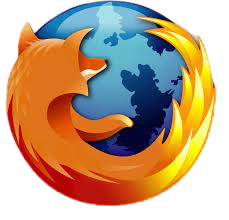

El científico informático británico Tim Berners-Lee creó el primer servidor web y navegador web gráfico en 1990 mientras trabajaba en el CERN, la Organización Europea para la Investigación Nuclear, en Suiza. Llamó a su nueva ventana a Internet "WorldWideWeb". Era una interfaz gráfica fácil de usar creada para el ordenador NeXT. Por primera vez, los documentos de texto se enlazaron a través de una red pública — la web tal como la conocemos. Un año más tarde, Berners-Lee le pidió a Nicola Pellow, estudiante de matemáticas del CERN, que escribiera Line Mode Browser, un programa para terminales básicos de computadora. En 1993, la web explotó. Universidades, gobiernos y corporaciones privadas vieron oportunidades en el Internet abierto. Todo el mundo necesitaba nuevos programas informáticos para acceder. Ese año, Mosaic fue creado en el Centro Nacional de Aplicaciones de Supercomputación (NCSA) en la Universidad de Illinois Urbana-Champaign por el científico informático Marc Andreessen. Fue el primer navegador web popular y el antepasado de Mozilla Firefox. NCSA Mosaic se ejecutaba en ordenadores Windows, era fácil de usar y le daba a cualquier persona con una PC acceso a las primeras páginas web, salas de chat y bibliotecas de imágenes. Al año siguiente (1994), Andreessen fundó Netscape y lanzó Netscape Navigator al público. Fue un gran éxito y el primer navegador para la gente. También fue el primer movimiento en un nuevo tipo de guerra para los usuarios de Internet. Las guerras
